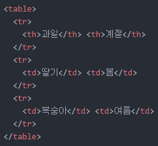
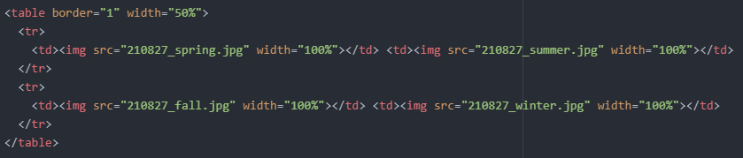

홈으로
<2021년 8월 27일 금요일>
1. 오늘의 목표
- 표 만들기
2. 목표 실천하기
어제는 사진의 크기를 조정하는 방법을 알아보았습니다.
오늘은 4×4 크기의 표를 만들어 크기가 같은 4개의 사진을 넣어보려고 합니다.
우선 표를 만들어야 합니다.
검색을 해보니, 표를 만들기 위해선 'table' 태그를 사용하면 된다고 합니다.
그리고 'table' 태그와 같이 쓰일 수 있는 태그가 3가지 있다고 합니다.
바로, 'tr', 'td', 'th' 태그입니다.
'table' 태그가 위 3가지 태그의 상위 태그이므로 'table' 태그 없이는 표를 만들 수 없습니다.
- 'tr' 태그는 해당 태그 내에 입력된 데이터를 하나의 행으로 묶어줍니다.
- 'td' 태그는 해당 태그 내에 데이터를 입력할 때 사용합니다.
- 'th' 태그는 각 셀을 대표하는 셀을 나타낼 때 사용합니다.
이것이 무슨 의미인지 하나씩 알아보겠습니다.
'tr' 태그는 해당 태그 내에 입력된 데이터를 하나의 행으로 묶어준다고 했습니다.
'tr' 태그 내에 여러 단어나 문장을 입력하면 모두 하나의 행으로 출력된다는 의미입니다.
그리고 단어나 문장을 입력할 때 쓰이는 태그가 바로 'td' 태그입니다.
만약, 두 단어를 서로 다른 셀에 입력하고 싶다면 'td' 태그를 두 번 사용하면 됩니다.
'th' 태그는 연관된 셀들의 '대장'이라고 생각하시면 됩니다.
단순히 강조하는 용도이므로 꼭 사용하실 필요는 없습니다.
예를 들어, 딸기와 복숭아가 있습니다.
아시다시피, 딸기와 복숭아는 과일입니다.
저는 과일이라는 단어를 강조하고, 그 아래 셀에 딸기와 복숭아를 입력하고 싶습니다.
그러기 위해선 'th' 태그 내에 과일을 입력하고, 'td' 태그 내에 딸기와 복숭아를 각각 입력하면 됩니다.
계절을 추가하여 2×3 크기의 표를 하나 만들어보겠습니다.
해당 표의 코드를 사진으로 첨부해보겠습니다.

설명 1. 과일과 계절이라는 대표 단어를 'tr' 태그를 통해 하나의 행으로 묶음과 동시에, 'th' 태그를 통해 각각 아래 단어들을 대표하는 단어임을 강조했습니다.
설명 2. 딸기와 봄이라는 단어를 'tr' 태그를 통해 하나의 행으로 묶었으며, 대표 단어가 아니므로 'td' 태그를 사용했습니다.
설명 3. 복숭아와 여름이라는 단어를 'tr' 태그를 통해 하나의 행으로 묶었으며, 대표 단어가 아니므로 'td' 태그를 사용했습니다.
앗, 그런데 각 셀에 경계가 없어 상당히 불편하게 느껴집니다.
경계 즉, 테두리를 씌우는 것은 어제 해봤기 때문에 크게 어렵지 않습니다.
'table' 태그에 'border' 속성을 적용하면 됩니다.
바로 테두리를 씌어보겠습니다.
아주 보기 좋습니다..라고 하기에는 'td' 태그를 사용한 단어는 글자가 왼쪽으로 정렬되어 있습니다.
다행히 글자를 가운데로 정렬하는 방법도 어제 익혔습니다.
'style="text-align:center 또는 left 또는 right"'와 같이 'style' 속성을 적용하면 됩니다.
그럼 바로 적용해봅시다.
이제야 깔끔해졌네요.
그럼 오늘의 목표인 4×4 크기의 표를 만들어 크기가 같은 4개의 사진을 넣어보겠습니다.
오..깔끔하게 잘 나왔습니다.
여기서 재밌는 사실을 발견했습니다.
'img' 태그에 'width="100%"'를 적용하면 화면에 꽉 차게 출력되는 것이 아니라, 표의 크기에 맞게 출력된다는 것입니다.
표의 크기가 가로 1m, 세로 1m 라고 가정해봅시다.
만약 'width="50%"'로 설정했다면 해당 사진은 표 크기의 절반인 가로 0.5m, 세로 0.5m 로 출력됩니다.
이를 실제로 적용해보겠습니다.
이렇게 말이죠.
앗, 그런데 남은 여백이 굉장히 불편합니다!
이 여백을 지우고 싶어졌습니다.
다행히 'table' 태그도 'img' 태그와 마찬가지로 'width'와 'height' 속성을 이용하면 된다고 합니다.
그래서 'table' 태그에 'width="50%"' 속성을 바로 적용시켰습니다.
이런..표의 크기를 절반으로 줄였는데 사진도 작아졌습니다.
왜 이런 결과가 나왔을까요?
단순합니다.
위에서 표의 크기에 따라 출력되는 사진의 크기가 결정된다고 언급했습니다.
표를 절반 크기로 줄였으므로 사진의 크기를 절반으로 줄일 필요 없이 'img' 태그에 'width="100%"' 속성을 적용시키면 되는 것입니다.
즉, 위에서 'img' 태그에 'width="50%"' 속성을 적용시켰던 것을 'width="100%"' 로 바꿔주면 되는 것입니다.
아래가 그 결과물입니다.
아래는 이 결과물의 코드입니다.

이렇게 오늘의 목표를 달성했습니다.
지금까지 작성한 코드를 보시려면 마우스 우클릭 후 '페이지 소스 보기'를 클릭하시면 됩니다.
그럼 내일도 화이팅..!
홈으로